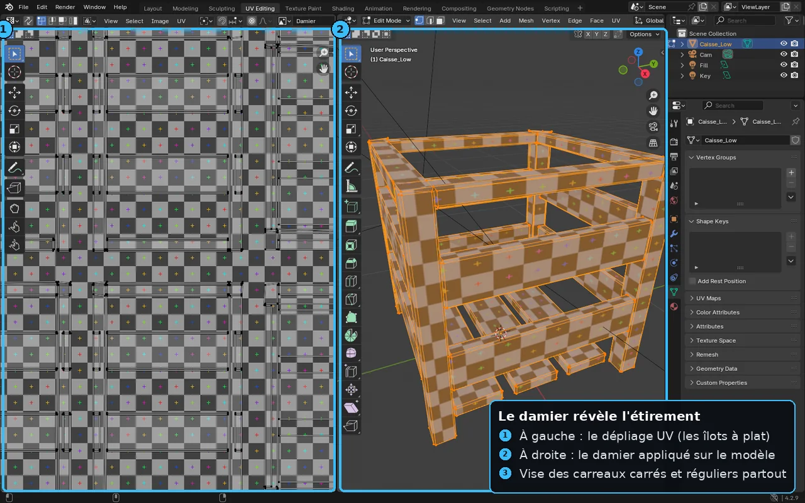

F6 — UV mapping en profondeur
À la fin de cette leçon, tu sauras :
- Définir précisément une coordonnée UV et expliquer pourquoi elle relie une surface 3D à une image 2D dans l'espace normalisé
0–1. - Décider où placer les coutures (seams) en arbitrant entre distorsion et nombre de coutures, et dire pourquoi une couture crée une discontinuité visible.
- Comprendre ce que fait un dépliage (unwrap), la différence entre projection angle-based et conformal (LSCM), et vérifier l'étirement avec une checker map.
- Ranger les îlots dans le carré
0–1(packing) avec une marge (padding) suffisante pour éviter le bleeding entre mipmaps. - Calculer et homogénéiser la densité de texels (texel density) pour une netteté cohérente, et savoir quand passer aux tuiles UDIM.
Pourquoi c'est important
Une texture est une image plate. Un modèle 3D est une surface dans l'espace. Entre les deux, il faut un plan d'adressage qui dise, pour chaque point du modèle, quel pixel de l'image lui colle dessus. Ce plan, ce sont les UV. Sans UV, ta texture la plus magnifique ne sait littéralement pas où se poser : elle bave, s'étire, se répète n'importe comment.
Dans un pipeline de production, le dépliage UV est le maillon silencieux entre la modélisation (F4) et tout ce qui touche au look : la peinture de textures, le baking de normal maps (F8), les matériaux PBR (F7). C'est aussi une étape redoutée parce qu'elle est invisible au client mais impitoyable : un mauvais UV ne se voit pas tant qu'on n'a pas texturé, et quand le défaut apparaît, il faut souvent tout reprendre — déplier après avoir peint, c'est repeindre.
Un studio juge la propreté d'un UV à trois critères : étirement minimal (la texture garde ses proportions), coutures discrètes (placées là où l'œil ne traîne pas), et densité homogène (deux objets côte à côte ont la même netteté). Maîtriser ces trois points, c'est livrer un asset qui « tient » dans n'importe quel moteur.
Théorie en profondeur
1. Qu'est-ce qu'une coordonnée UV ?
On appelle coordonnée UV une paire de nombres (U, V) attachée à chaque sommet du maillage, qui désigne un emplacement dans une image 2D. U est l'axe horizontal, V l'axe vertical. On utilise les lettres U et V tout simplement parce que X, Y, Z sont déjà prises par l'espace 3D : il fallait deux lettres libres pour le plan de la texture, et U, V (juste avant dans l'alphabet) se sont imposées par convention.
Le point crucial : cet espace est normalisé. Peu importe que ta texture fasse 512, 2 048 ou 8 192 pixels de côté, l'espace UV va toujours de 0 à 1. (0, 0) est un coin (en bas à gauche dans Blender, en haut à gauche dans certains autres logiciels), (1, 1) le coin opposé. (0.5, 0.5) tombe pile au centre de l'image, quelle que soit sa résolution. C'est ce qui permet de changer la résolution d'une texture sans toucher au dépliage : les UV pointent vers des proportions, pas des pixels.
Comme l'espace UV est en 0–1, un même dépliage marche avec une texture 1K en prototypage puis 4K en production. Le passage de la coordonnée UV au pixel concret est fait à la volée par le GPU : pixel_x = U × largeur. C'est exactement l'idée d'image numérique vue en F1, appliquée au mapping.
L'analogie du carton qu'on déplie (et de l'écorché)
Imagine une boîte en carton fermée. Pour l'imprimer à plat, tu la déplies : tu coupes le long de certaines arêtes avec un cutter, et tu rabats les six faces dans le plan jusqu'à obtenir un patron en croix. Le dépliage UV, c'est exactement ça : prendre une surface 3D et la mettre à plat dans le carré 0–1. Les endroits où tu donnes un coup de cutter, ce sont les coutures.
L'autre image, plus crue mais très juste en game art, est l'écorché (le skinning au sens propre) : déplier un personnage, c'est comme retirer sa peau d'un seul tenant et l'étaler à plat sur une table. Là où tu coupes la peau pour pouvoir l'aplatir sans la déchirer, ce sont les coutures. C'est pour ça qu'on parle de seams (coutures, comme sur un vêtement) : une bonne couture UV se place là où une couture de vêtement irait — sous le bras, à l'intérieur des jambes, dans le dos.
2. Les coutures (seams) : le grand compromis
Une couture est une arête le long de laquelle le maillage est « découpé » dans l'espace UV. De part et d'autre d'une couture, la surface est séparée en deux morceaux distincts dans le plan : ce sont des îlots UV (UV islands). Sans couture, impossible d'aplatir quoi que ce soit qui ne soit pas déjà plat — une sphère ou un visage refusera de s'étaler sans se déchirer ou s'étirer monstrueusement.
Pourquoi une couture est un mal nécessaire
Le dilemme fondamental du dépliage : plus tu coupes, moins ça s'étire ; moins tu coupes, plus c'est continu mais déformé. Ce sont deux objectifs opposés.
- Beaucoup de coutures → chaque morceau s'aplatit presque sans distorsion (la texture reste fidèle), mais tu multiplies les discontinuités et tu gaspilles de l'espace UV en marges.
- Peu de coutures → la texture est continue sur de grandes zones, mais les régions très courbes s'étirent et la texture y est déformée.
Une couture n'est jamais « gratuite » visuellement : à l'endroit où passe une couture, la texture peut présenter une cassure — un léger décalage, une ligne visible, une teinture qui ne raccorde pas pile. Sur une normal map, une couture mal gérée peut même créer un liseré d'ombre. D'où la règle d'or : on cache les coutures dans les zones peu vues. Sous les aisselles, dans une rainure, à l'arrière d'un objet, le long d'une arête déjà dure. Jamais en plein milieu d'une joue ou sur le logo de face d'un produit.
Place tes coutures là où le modèle a déjà des arêtes dures (hard edges) ou des changements de matériau. L'œil accepte déjà une rupture à ces endroits, donc la discontinuité UV s'y fond. Sur un coffre en bois cerclé de métal, coupe pile sur la jointure bois/métal : la couture devient invisible et sert de frontière de matériau.
0–1. Le coin (0,0) et le coin (1,1) bornent l'espace UV ; tout îlot doit tenir à l'intérieur.3. Le dépliage (unwrap) : comment la machine aplatit
Déplier, c'est calculer, pour chaque sommet, sa position (U, V) dans le plan, en respectant au mieux deux contraintes contradictoires : ne pas étirer (les longueurs doivent être préservées) et ne pas cisailler (les angles doivent être préservés). Sur une surface courbe, on ne peut pas avoir les deux parfaitement à la fois — c'est mathématiquement impossible d'aplatir une sphère sans déformation, comme le sait tout cartographe. Les algorithmes choisissent donc lequel privilégier.
Projection simple vs dépliage assisté
Le plus basique est la projection : on « photographie » le modèle depuis un axe (projection planaire), depuis un cylindre ou une sphère, et on prend cette image comme UV. Rapide, parfait pour une forme qui colle au volume projeté (un mur → planaire, un tuyau → cylindrique), mais catastrophique sur une forme organique : les flancs perpendiculaires à l'axe de projection s'écrasent en une ligne.
Pour les formes complexes, on utilise des solveurs de dépliage qui, à partir des coutures que tu as posées, calculent la mise à plat optimale. Deux familles dominent :
- Conformal — LSCM (Least Squares Conformal Maps) : privilégie la préservation des angles. Les formes locales restent fidèles (un carré reste un carré), mais les tailles relatives entre zones peuvent dériver. C'est une méthode « Unwrap » classique de Blender. Robuste, prévisible, idéale quand tu as posé de bonnes coutures.
- Angle-based — ABF (Angle Based Flattening) : travaille directement à minimiser la distorsion d'angle de chaque triangle. Souvent un poil plus fidèle que LSCM sur des surfaces très bombées, au prix d'un calcul plus lourd. C'est l'option par défaut de l'Unwrap de Blender.
Dans la pratique, tu ne codes rien : tu choisis la méthode dans un menu, tu poses des coutures intelligentes, et tu laisses le solveur faire. Le travail d'artiste, c'est où couper — l'algorithme s'occupe du calcul.
La checker map : le détecteur d'étirement
Comment voir si un dépliage étire ? On applique une checker map (texture en damier de carrés colorés régulier). La règle de lecture est limpide :
- Carrés restés carrés et de taille égale partout → dépliage sain, densité homogène.
- Carrés devenus rectangles → étirement dans une direction (la texture sera tirée).
- Carrés plus gros à un endroit qu'à un autre → densité de texels incohérente (cette zone aura une texture plus floue).
La checker map est l'outil de diagnostic numéro un. On l'allume avant de peindre quoi que ce soit, on corrige les coutures et la densité tant que le damier n'est pas propre, puis seulement on texture.

4. Le packing : ranger les îlots dans le carré
Une fois les morceaux aplatis, il faut les ranger dans le carré 0–1 sans qu'ils se chevauchent et en gaspillant le moins d'espace possible. C'est le packing (ou layout). Plus l'espace est rempli, plus chaque îlot reçoit de pixels donc de netteté : le packing influe directement sur la qualité finale.
La marge (padding) et le bleeding
On ne colle jamais deux îlots bord à bord. On laisse une marge (padding, parfois appelée gutter) entre eux. Pourquoi ? À cause de deux phénomènes :
- Le filtrage bilinéaire du GPU mélange un pixel avec ses voisins. Au bord d'un îlot, il va piocher de la couleur dans l'îlot d'à côté : c'est le bleeding (bavure), un liseré parasite sur la couture.
- Les mipmaps — les versions réduites de la texture, générées pour les objets lointains (voir F12) — divisent la résolution par deux à chaque niveau. À chaque réduction, les îlots se « rapprochent » en pixels et finissent par se contaminer si la marge est trop fine. Plus l'objet est loin, plus la bavure est large.
Règle pratique : une marge d'environ 4 pixels pour une texture 1K, 8 px pour 2K, 16 px pour 4K (en gros, on garde la même marge relative). On accompagne d'un dilate / edge padding au moment de l'export des textures : on étale la couleur au-delà du bord de l'îlot pour nourrir les mipmaps. Substance et Blender le font automatiquement, mais il faut que la marge UV existe pour qu'ils aient de la place.
Orientation et cohérence
On oriente les îlots de façon cohérente (par exemple, le « haut » du modèle vers le haut de l'UV) pour deux raisons : faciliter la peinture manuelle (on s'y retrouve), et aligner le grain des textures directionnelles (bois, brossage métal) qui doit suivre le même sens partout. Pour des éléments répétés (les boulons d'une plaque), on peut volontairement empiler (overlap) les îlots identiques au même endroit : ils partagent les mêmes pixels, on économise de l'espace UV — c'est le seul chevauchement légitime, et il doit être intentionnel.
5. La densité de texels (texel density)
La densité de texels est le nombre de pixels de texture par unité de surface réelle du modèle, exprimé en px/cm (ou px/m, ou texels/unité). C'est la mesure objective de la « netteté » d'une surface. Deux objets avec la même densité auront des textures aussi nettes l'une que l'autre ; un objet à densité deux fois plus faible aura une texture deux fois plus floue, à distance de vue égale.
Le réflexe pro est d'homogénéiser la densité de texels sur tout un set d'assets : sans ça, un mur ultra net jouxtera une caisse toute molle, et l'œil le remarque immédiatement. On définit une cible projet (par exemple 10,24 px/cm, soit 1024 px pour un mètre) et tous les assets s'y tiennent. La plupart des studios ont une valeur de référence écrite dans leur style guide technique.
L'homogénéité est la règle, mais on s'autorise des exceptions intentionnelles : le visage d'un héros vu en gros plan mérite plus de densité que la plante de ses pieds qu'on ne voit jamais. On parle de budget : on investit les pixels là où la caméra regarde. Une arme tenue en main (vue de très près) reçoit souvent une densité bien supérieure à un décor lointain.
| Type d'asset | Densité indicative | Pourquoi |
|---|---|---|
| Décor lointain / skybox | ~2–5 px/cm | Jamais vu de près : gaspiller des pixels serait inutile. |
| Environnement jouable standard | ~5–10 px/cm | Compromis netteté / coût mémoire pour les murs, sols, props. |
| Personnage / arme vue en main | ~10–20 px/cm | Vu de près en permanence : la netteté est critique. |
| Gros plan ciné / héros | UDIM, >20 px/cm | Le moindre pore doit être net en 4K. |
6. UDIM : quand un seul carré ne suffit plus
L'espace 0–1 a une limite : une seule texture pour tout l'objet. Pour un héros de cinéma qu'on veut net en très haute résolution, une seule 4K ne donne pas assez de densité. La solution est le système UDIM (U-Dimension) : on étale le dépliage sur une grille de tuiles de 0–1 côte à côte, chacune portant sa propre texture.
Les tuiles sont numérotées selon une convention précise : la première, en bas à gauche, est 1001. On avance vers la droite (1002, 1003, 1004… jusqu'à dix par rangée), puis on remonte d'une rangée à 1011, et ainsi de suite. La formule : 1001 + U + (V × 10) où U et V sont les indices de colonne et de rangée à partir de 0. Ainsi une tuile une rangée au-dessus de 1001 est 1011 ; deux colonnes à droite et une rangée au-dessus, c'est 1013.
- Quand l'utiliser : cinéma, VFX, cinématiques, personnages héros — bref, quand la densité prime sur le coût temps réel.
- Quand l'éviter : le jeu temps réel classique. La plupart des moteurs gèrent mal ou coûteusement les UDIM en runtime ; on préfère un seul atlas
0–1bien packé, ou plusieurs matériaux séparés. - Comment : on déplie normalement, puis on déplace des îlots entiers dans les tuiles voisines. Substance Painter et Mari peignent ensuite à travers les tuiles de façon transparente.
0–1 classique. On numérote vers la droite, puis on saute à 1011 en montant d'une rangée. Chaque tuile porte sa propre texture : la densité grimpe sans limite, au prix de plusieurs fichiers et d'un coût temps réel élevé.🔧 Démonstration pas à pas
Objectif : déplier proprement une caisse en bois dans Blender, vérifier l'absence d'étirement, puis packer le tout. On part d'un cube auquel on a donné un peu de relief.
- Passer en mode édition. Sélectionne l'objet, appuie sur
Tab. Tu vois maintenant les vertices, edges et faces. Ce qui se passe : Blender t'autorise à manipuler la géométrie et, surtout, à marquer des coutures. - Sélectionner les arêtes de coupe. Passe en mode arête (
2), puis sélectionne les arêtes où tu veux couper : typiquement les arêtes verticales arrière de la caisse, là où on ne regarde pas. Ce qui se passe : rien encore — tu désignes juste le futur tracé du cutter. - Marquer la couture. (ou clic droit puis Mark Seam). Les arêtes choisies deviennent rouges. Ce qui se passe : tu as dit au solveur « c'est ici que la peau peut s'ouvrir pour s'aplatir ».
- Tout sélectionner et déplier.
Apour tout sélectionner, puis (méthode Angle Based par défaut). Ce qui se passe : Blender résout la mise à plat en respectant tes coutures et minimise l'étirement. Le résultat apparaît dans l'UV Editor. - Ouvrir l'UV Editor et activer la checker map. Bascule sur l'espace de travail (onglet en haut). Dans la vue 3D, en mode Material Preview, applique une texture damier : puis génère une image de type UV Grid via . Ce qui se passe : le damier se plaque sur la caisse ; tu peux lire l'étirement.
- Diagnostiquer. Tourne autour de la caisse. Carrés réguliers ? Parfait. Carrés étirés près d'une arête ? Ajoute ou déplace une couture (étapes 2–4) et redéplie. Ce qui se passe : tu itères jusqu'à ce que le damier soit propre — c'est le vrai travail.
- Vérifier la densité. Active l'add-on Texel Density Checker (ou regarde la taille des carrés à l'œil) : tous les îlots doivent afficher des carrés de même taille. Ce qui se passe : tu garantis une netteté homogène.
- Packer. Dans l'UV Editor,
Apuis . Règle la marge (par ex. 0,01–0,02 pour ~2K) dans le panneau d'options en bas à gauche. Ce qui se passe : Blender range automatiquement les îlots dans0–1en respectant la marge, ce qui évite le bleeding sur les mipmaps.
⚠️ Pièges & erreurs courantes
🔧Exercice pratique
Déplie une caisse en bois (cube avec quelques arêtes biseautées si tu veux) dans Blender, du marquage des coutures au packing final, en n'utilisant qu'une texture 2K.
- Marque les coutures uniquement sur les arêtes arrière et inférieures (zones peu vues).
- Déplie en Angle Based, applique une UV Grid et tourne autour pour traquer l'étirement.
- Corrige jusqu'à obtenir des carrés réguliers partout, puis packe avec une marge adaptée au 2K.
- Note la densité de texels obtenue et compare-la à une cible de 10 px/cm.
- Le damier affiche des carrés (pas de rectangles) sur toutes les faces : zéro étirement visible.
- Les carrés ont la même taille sur les six faces : densité homogène.
- Aucune couture n'est visible sur une face vue de face ; elles sont toutes à l'arrière ou dessous.
- Les îlots ne se chevauchent pas et conservent une marge visible entre eux dans le carré
0–1.
Vérifie ta compréhension
Clique sur la réponse que tu penses correcte : la bonne réponse et une explication s'affichent aussitôt.
Exercices
Applique une texture en damier (checker) sur un objet déplié et repère les zones où les carrés sont étirés ou de taille inégale.
Voir une piste
Le checker révèle l'étirement (carrés déformés) et les variations de texel density (carrés plus gros/petits). On corrige en ajustant les seams et en relaxant/échelonnant les îlots UV.
Déplie un cube et un cylindre en plaçant les coutures dans des zones peu visibles, puis pack les îlots dans l'espace 0–1.
Voir une piste
Pour le cylindre, une seam verticale + deux cercles aux extrémités. Pour le cube, on peut déplier en croix. On packe ensuite les îlots pour maximiser l'usage de l'espace UV (donc la résolution utile).
Uniformise la texel density entre deux objets de tailles différentes partageant la même texture.
Voir une piste
Mesure la texel density de chaque objet (outil dédié dans Blender/RizomUV) et mets-les à la même valeur (ex. 10,24 px/cm pour du 1024). Le petit objet occupe alors moins d'espace UV que le grand : la netteté perçue devient cohérente.
Déplie les UV de ton prop fil rouge : place des coutures discrètes et occupe bien l'espace UV. Un bon dépliage conditionne tout le texturing PBR de l'étape suivante.
- Une coordonnée UV
(U, V)relie chaque sommet à un emplacement de l'image, dans l'espace normalisé0–1indépendant de la résolution. - Le dépliage est un compromis : plus de coutures = moins d'étirement ; on cache les coutures dans les zones peu vues et sur les arêtes dures.
- La checker map est ton détecteur d'étirement : carrés réguliers = sain, rectangles = étirement, tailles inégales = densité incohérente.
- Au packing, laisse une marge (padding) proportionnelle à la résolution pour éviter le bleeding des mipmaps.
- Homogénéise la densité de texels (px/cm) sur tout le set ; passe aux UDIM seulement en ciné/perso héros, pas en jeu temps réel courant.
Glossaire des termes introduits
Coordonnée UV — paire (U, V) attachée à un sommet, qui désigne un point de l'image 2D dans l'espace normalisé 0–1.
Espace UV (0–1) — repère normalisé où se range le dépliage ; (0,0) et (1,1) en sont les coins, quelle que soit la résolution de la texture.
Couture (seam) — arête le long de laquelle le maillage est découpé pour pouvoir s'aplatir ; elle crée une discontinuité qu'on cache dans les zones peu visibles.
Îlot UV (island) — morceau de surface aplati d'un seul tenant, délimité par des coutures.
Dépliage (unwrap) — calcul de la mise à plat des sommets dans le plan UV en minimisant l'étirement et le cisaillement.
LSCM / Angle-based — familles de solveurs de dépliage : LSCM préserve les angles (conformal), l'angle-based (ABF) minimise la distorsion d'angle de chaque triangle.
Checker map — texture en damier régulier servant à diagnostiquer l'étirement et l'irrégularité de densité d'un dépliage.
Packing — agencement des îlots dans le carré 0–1 sans chevauchement et avec un remplissage maximal.
Padding / bleeding — la marge laissée entre îlots ; le bleeding est la bavure de couleur entre îlots voisins causée par le filtrage et les mipmaps quand la marge manque.
Densité de texels (texel density) — nombre de pixels de texture par unité de surface réelle (px/cm) ; mesure objective de la netteté à homogénéiser.
UDIM — système de tuiles 0–1 juxtaposées numérotées dès 1001, employé pour de très hautes densités (ciné, personnages héros).
Voir aussi le glossaire global.
Pour aller plus loin
- F4 — Anatomie d'un mesh : comprendre comment l'UV est stocké par sommet.
- F8 — Baking : pourquoi un bon dépliage est indispensable avant de cuire une normal map.
- F7 — PBR : comment les UV nourrissent les maps albedo, roughness, metallic.
- F12 — Optimisation : mipmaps, atlas et budget de texture en temps réel.
- L1 — Blender et L2 — Substance : les outils de dépliage et de texturing en pratique.